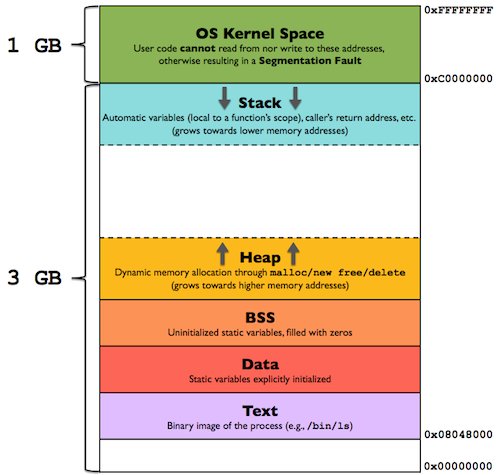
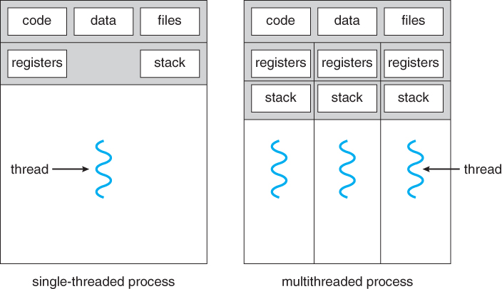
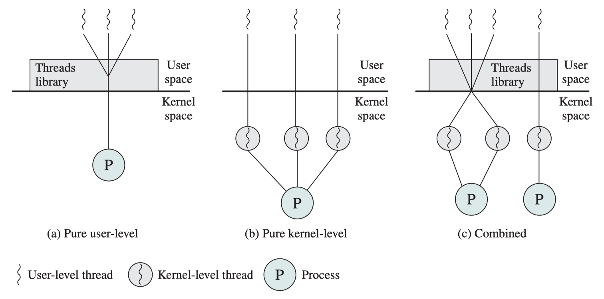

<div style="display: flex; justify-content: center; align-items: center; height: 700px;"> <div style="text-align: center; padding: 40px; background-color: white; border: 2px solid rgb(0, 63, 163); border-radius: 20px; box-shadow: 0 0 20px rgba(0,0,0,0.1);"> <h1 style="font-size: 48px; font-weight: bold; margin-bottom: 20px; color: #333;">CS130 Operating System Tutorial</h1> <p style="font-size: 24px; color: #666;">Process and Thread</p> <p style="font-size: 16px; color: #999; margin-top: 20px;">Hengyu Ai | 2024-10-22</p> </div> </div> <!--s--> <div class="middle center"> <div style="width: 100%"> # Part.1 User's Perspective of Process and Thread </div> </div> <!--v--> ## This is Your Own Computer - OS is a perfect manager <!-- .element: class="fragment" --> - Running multiple programs <!-- .element: class="fragment" --> - One of them crashes, others are fine <!-- .element: class="fragment" --> - Amazing! <!-- .element: class="fragment" --> <!-- .element: class="fragment" --> <!--v--> ## This is Your Own Computer (Cont'd) Run the following code: ```c #include <stdio.h> #include <stdlib.h> #include <unistd.h> int main(void) { int *p = malloc(sizeof(int)); printf("p: %p\n", p); while(1) { *p = *p + 1; printf("value: %d\n", *p); sleep(1); } return 0; } ``` Compile and run `gcc -O0 proc.c -o proc` <!--v--> ## This is Your Own Computer (Cont'd) Then try to hack it: ```c #include <stdio.h> int main() { unsigned long long addr; scanf("%llx", &addr); *(int*)addr = 114514; printf("value: %d\n", *(int*)addr); return 0; } ``` <span class="fragment">Result? `Job 1, './hack' terminated by signal SIGSEGV (Address boundary error)`</span> Although the two programs are running on the same computer, the memory space is not the same. <!-- .element: class="fragment" --> <!--v--> ## Processes in User's Perspective - A Process is a program in execution - User don't need to care how programs are isolated - A program can assume it has the whole computer - e.g. in Linux x86 architecture, the code segment should start at a very low address - But all the running programs can load their code to those addresses <!--v--> ## Times are Moving On <div class="fragment"> <img src="images/punched_cards.jpg" width="45%" style="display: block; margin: 0 auto;"> <div style="text-align: center;"> No OS or process existed then. </div> </div> - The word "process" originally means a computation task <!-- .element: class="fragment" --> - We need more features! "process" then means a running program (abstraction) <!-- .element: class="fragment" --> - Computers are capable of bigger tasks <!-- .element: class="fragment" --> - A program need to do multiple things at the same time <!-- .element: class="fragment" --> - Neither smart nor efficient to use many processes to achieve this <!-- .element: class="fragment" --> - The original form of "process", a computation task, is back <!-- .element: class="fragment" --> <!--v--> ## Threads in User's Perspective - Several lines of code that can be executed concurrently - More lightweight than processes - Has own stack memory, share same heap memory - Do not have isolation like processes - Can communicate through shared memory <!--s--> <div class="middle center"> <div style="width: 100%"> # Part.2 OS's Perspective of Process and Thread </div> </div> <!--v--> ## Memorize Them All In the abstraction we've learned, a process owns the whole memory space. But it's impossible to give full control of memory to a user program. <div style=" margin-top: 10px; margin-right: 50px;" markdown="1"> <p></p> - Kernel should have privilege to access all memory - Allocate specific parts of physical memory to kernel (kernel space) - Virtual memory: map virtual address to physical address - A process accesses its stack memory (high address) but the actual address may be low address in physical memory. </div> <!--v--> ## Process Concurrency - Processes must be executed concurrently <!-- .element: class="fragment" --> - Each process has some states <!-- .element: class="fragment" --> - Basic infomation: process ID, process state... <!-- .element: class="fragment" --> - Register state: critical for execution <!-- .element: class="fragment" --> - Virtual memory: how to build the mapping between virtual and physical memory? page table <!-- .element: class="fragment" --> - File descriptors... <!-- .element: class="fragment" --> <li class="fragment">This information is stored in a data structure called <b>Process Control Block (PCB)</b> </li> To achieve concurrency, the OS must switch between processes. <!-- .element: class="fragment" --> - Save the state of the old process <!-- .element: class="fragment" --> - Load the state of the new process <!-- .element: class="fragment" --> - The work above is done in kernel mode <!-- .element: class="fragment" --> <!--v--> ## Threads and Processes <p></p> <div class="fragment"> - In single threaded systems, a **process** is - Resource owner - Scheduling/execution unit </div> <div class="fragment"> - In multi-threaded systems - seperation of resource ownership and ecxution unit - A **thread** is unit of execution, scheduling and dispatching - A **process** is a container of resources, and a collection of threads </div> <!--v--> ## Threads and Processes (Cont'd) - All threads of a process share resources - Memory address space: global data, code, heap … - Open files, network sockets, other I/O resources - IPC facilities - Private state of each thread: - Execution state: running, ready, blocked, etc.. - Execution context: Program Counter, Stack Pointer, other user-level registers - Per-thread stack </br> Similar struct: Thread Control Block (TCB) TCB is smaller and less states are needed in a context switch. Thread has a smaller context switch overhead than process. <!--v--> ## User Level and Kernel Level Threads <p></p> <!--s--> <div class="middle center"> <div style="width: 100%"> # Part.3 How Do We Make Use of Them? </div> </div> <!--v--> ## Do Everything under Process Model - Launching is also a program <!-- .element: class="fragment" --> - Therefore, it should be done by a process <!-- .element: class="fragment" --> - Recall the booting process <!-- .element: class="fragment" --> - BIOS/UEFI loads the bootloader, which loads the kernel <!-- .element: class="fragment" --> - The kernel then creates the first process <!-- .element: class="fragment" --> - Anyway, now I want to create a new process <!-- .element: class="fragment" --> <!--v--> ## POSIX APIs A law for computer science: if you need something, you'll find someone has already done it. We have POSIX APIs for execution model. - `fork()`: create a new process by duplicating the current process - `exec()`: load a new program and replace the current process - `wait()`: wait for a child process to terminate - `exit()`: terminate the current process and return the status to the parent process These APIs are used to create and manage processes. All the processes are created from forks of the first process (`init` or `systemd` in Linux). <!--v--> ## POSIX APIs (Cont'd) `pthread` is used to create and manage threads. - `pthread_create()`: create a new thread - `pthread_join()`: wait for a thread to terminate - `pthread_exit()`: terminate the calling thread - `pthread_yield()`: yield the CPU to another thread Syncronization and communication between threads are also provided by `pthread`. - `pthread_mutex_lock()`, `pthread_mutex_unlock()` - `pthread_cond_wait()`, `pthread_cond_signal()` - `pthread_barrier_wait()` <!--v--> ## Fork ```c #include <stdio.h> #include <unistd.h> #include <sys/types.h> int main() { printf("Hello from the main process!\n"); pid_t pid = fork(); if (pid < 0) { fprintf(stderr, "Fork failed\n"); return 1; } else if (pid == 0) { printf("Hello from the child process!\n"); } else { printf("Hello from the parent process!\n"); } return 0; } ``` <!--v--> ## pthread ```c #include <pthread.h> void *print_message(void *ptr) { char *message = (char *)ptr; printf("%s \n", message); return NULL; } pthread_create(&thread1, NULL, print_message, (void *)message1); ``` <!--v--> ## Are processes and threads really that separate? [An email from Linus Torvalds in Linux mailing list](https://lkml.iu.edu/hypermail/linux/kernel/9608/0191.html) > Traditionally, the difference between a "thread" and a "process" has been mainly that a threads has CPU state (+ possibly some other minimal state), while all the other context comes from the process. However, that's just _one_ way of dividing up the total state of the COE, and there is nothing that says that it's the right way to do it. Limiting yourself to that kind of image is just plain stupid. Linux source code `sched.h`, `struct task_struct` <!--s--> ## Takeaway Message - Abstraction: Process $\rightarrow$ running program, Thread $\rightarrow$ computation task - Resource Ownership: Process owns resources, threads share resources - Creation & Termination: Process creation and termination is more expensive - Context Switch: Thread switch is faster (TCB is also smaller than PCB) - PCB involves more information (e.g. memory space, file descriptors) - Things PCB and TCB have in common: program counter, stack, registers - Communication: threads can communicate through shared memory, processes need IPC - kernel threads, user threads, green threads <!--s--> <div style="display: flex; justify-content: center; align-items: center; height: 700px; "> <div style="text-align: center; padding: 40px; background-color: white; border-radius: 20px; box-shadow: 0 0 20px rgba(0,0,0,0.1);"> <div style="display: inline-block; padding: 20px 40px; border-radius: 10 px; margin-bottom: 20px;"> <h1 style="font-size: 48px; font-weight: bold; margin: 0; color: rgb(16, 33, 89)">Thanks for Listening</h1> </div> <p style="font-size: 24px; color: #666; margin: 0;">Any questions?</p> </div> </div>